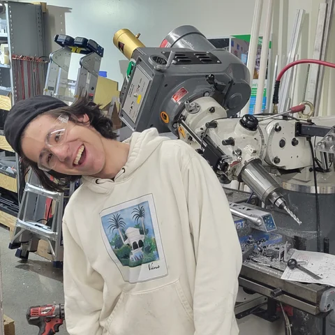

Hello, my name is Charlie. I am a senior at Franklin W. Olin College of Engineering studying electrical and computer engineering. My main interests are in microwave circuit design, satellite systems, extremely low power circuits and embedded microcomputers.
I have worked on microwave circuit design for satellite communications systems at Space Exploration Technologies, Astranis Space Technologies, and Mithril Technologies. In addition to my courses and part time job I am working on open source RFIC design and developing an inexpensive custom integrated circuit manufacturing process.
Please take a look at the portfolio tab to check out my projects or the work tab to see my professional experiences.
In my spare time I enjoy subtractive machining, collecting machinist’s tools, shop literature as well as honing my skills as a mechanical draftsman. I take care of a small indoor herb garden and repair vintage electronics test equipment to add to my collection.
If you want to get in contact with me, e-mail me at csands@olin.edu. On occassion I work the space station VHF/UHF HAM repeater systems when they are over the eastern seaboard. You could potentially contact me there too, KF8CIV.
All the best,